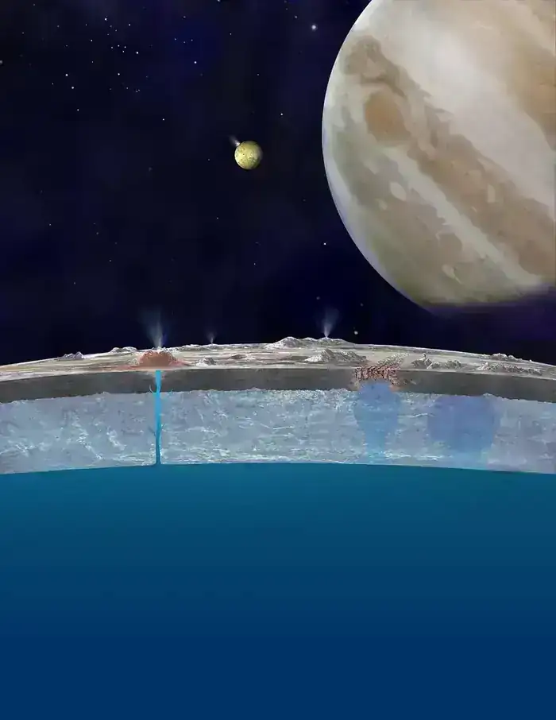

The evidence for the ocean
Europa's surface is ice, cut by long curved fractures, with very few impact craters — a young surface being resurfaced. The Galileo mission's magnetometer detected an induced magnetic field, which requires a conductor near the surface: a salty ocean, responding to Jupiter's rotating field.
Maps, diagrams and images


The numbers are not in dispute. The ice shell is roughly 15–25 km thick, the ocean beneath it perhaps 60–150 km deep, and tidal heating from Jupiter keeps it liquid. The total volume is about twice Earth's oceans.
What is not known
Whether the ocean is habitable, and whether it is inhabited. Water alone is not enough: life needs an energy source, and the chemistry — salinity, pH, the availability of oxidants from the surface — is unknown. Plumes of water vapour reported by Hubble in 2012 and 2016 have not been confirmed by later observations.
Europa Clipper launched in October 2024 and arrives in 2030; it will characterise the ice shell and the ocean's composition from orbit. It is not a life-detection mission, and its planners say so.
Documented: a global salty ocean beneath an ice shell, by magnetometry and geology.
Documented: tidal heating and a young, resurfacing surface.
Not established: habitability — the chemistry is unknown.
Not established: life, or any biosignature. No mission has sampled the ocean.
Testable: Clipper's instruments will constrain composition, which is the next real step.
Why it is in the archive
Because it is the archive's model of a claim where the evidence is strong, the inference people want is one step further, and the honest answer is 'the water is there; nothing else is yet'.
Open resources on this topic
- PapersOpen-access articles: DOAJ · PubMed Central · Internet Archive Scholar
- BooksPublic-domain and borrowable copies: Open Library · Project Gutenberg · Google Books · Internet Archive
Cite this page
Momin, S. (2026). Europa's Ocean. The Larger World Archive. https://drsamonline.github.io/LARGE_GLOBE/europa-ocean.htmlMomin, Sohil. “Europa's Ocean.” The Larger World Archive, 2026, https://drsamonline.github.io/LARGE_GLOBE/europa-ocean.html.Momin, Sohil. “Europa's Ocean.” The Larger World Archive, 2026. https://drsamonline.github.io/LARGE_GLOBE/europa-ocean.html.@misc{europas2026europa,
author = {Momin, Sohil},
title = {Europa's Ocean},
year = {2026},
howpublished = {The Larger World Archive},
url = {https://drsamonline.github.io/LARGE_GLOBE/europa-ocean.html},
note = {Last reviewed 20 November 2026}
}Last reviewed 20 November 2026 · Corrections policy · this page is not peer reviewed
Sources for this page
- Wikipedia, “Europa (moon)” — the moon, the ocean and the evidenceen.wikipedia.org
- Wikipedia, “Europa Clipper” — the mission and its limitsen.wikipedia.org
- Wikipedia, “Tidal heating” — why the ocean stays liquiden.wikipedia.org
- Wikipedia, “Ocean world” — the family of bodies this belongs toen.wikipedia.org